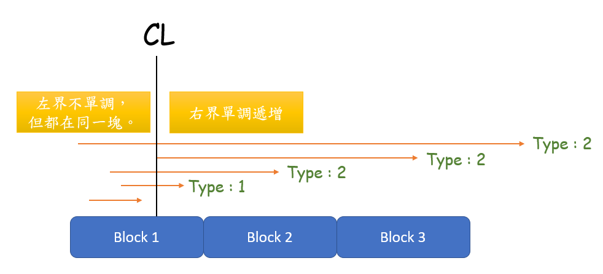

原題網址 : https://tioj.ck.tp.edu.tw/problems/1902
Description
給你長度為 $N$ 的序列 $a$ 及 $Q$ 筆詢問，
每次詢問一個區間 $[l,r]$ ，求 $[l’,r’]$ 有最大的 $xor$ 值，且 $l \le l’ \le r’ \le r$。
- $[l,r]$ 的 $xor$ 值定義為區間內所有數字 $xor$ 起來。
- $N,M \le 1e5$
- $a_i \le 1e9$
Solution
step 1
首先我們要先會求出 $[1,n]$ 的最大 $xor$ 值子區間。
我們先假設 :
\begin{aligned}
A_i = a_1 \oplus a_2 \oplus …. \oplus a_i \
\end{aligned}
利用 $xor$ 兩次會抵消的性質，我們可以用 $A_{l-1} \oplus A_r$ 來求出 $[l,r]$ 的 $xor$ 值。
接著我們套上01-字典樹(01-Trie)，然後從左到右插入$A_i$，每次利用字典樹求跟 $A_i$ 做 $xor$ 最大的值，最後取 $max$ 即是 $xor$ 值最大的子區間。
說的簡單點，我們枚舉右界然後用字典樹快速的算出每個右界$xor$值最大的子區間，然後取 $max$。
時間複雜度 : $O(NlogC)$。
step 2
接著我們要應付 $Q$ 筆詢問了。
我一開始解題的時候思緒就一直往離線、莫隊去想，但是就是遲遲沒辦法解出來，最後只好去請求ZCK給點提示w
套上莫隊最主要的問題是我們沒辦法在擴張、縮減區間的時候好好維護答案，左右界一直不規則的亂動，我們套入 step1 的方法就要一直重新把整個區間插入字典樹一次求答案，這樣還不如不要莫隊(X)
既然我們不希望左右界一直不規則的亂動，我們就固定左界，然後讓右界單調吧。
我們先把詢問分成兩種 :
- 左右界在同一塊
- 左右界在不同一塊
對於第一種，我們直接暴力把它加入字典樹然後求得答案後再清空字典樹。
每次詢問費時 $O(\sqrt{N} logC)$。
對於第二種，我們把左界在同一塊的一起做處理，讓它們依照右界遞增排序，並假設 $CL$ 是這些詢問中最大的左界，我們假設 $[L,R]$ 為當前字典樹所維護的區間，並令其為 $[CL,CL-1]$ (空區間)。
對於每個詢問擴張右界，擴張的同時，每擴張一格就求一次 $[CL , R]$ 的答案，記得把它存起來，因為接下來的每個詢問也嚴格涵蓋這些區間的答案。

最後我們再把每個詢問的 $[QL_i , CL-1]$ 依序加進Trie裡面求答案，解決本次詢問後把 $[QL_i , CL-1]$ 的值從 Trie拔掉。
時間複雜度
對於在同一塊的所有詢問最多擴張右界 $N$ 次，複雜度 $O(N log C)$ ，最多有 $\sqrt{N}$ 塊，所以擴張右界的總複雜度是 $O(N \sqrt{N} logC)$。
然後每筆詢問都要把重新把 $[QL_i , CL-1]$ 加進去又拔出來各一次，由於 $QL_i$ 跟 $CL-1$ 一定在同一塊內，所以單次操作複雜度 $O(\sqrt{N})$，總複雜度最多 $O(Q \sqrt{N}logC)$。
故總時間複雜度 : $O(N \sqrt{N} logC + Q \sqrt{N}logC)$。
(應該吧(? 有錯誤拜託告訴我><’)
AC code
有點醜的code，但不知道怎麼寫好看一點qq
1
2
3
4
5
6
7
8
9
10
11
12
13
14
15
16
17
18
19
20
21
22
23
24
25
26
27
28
29
30
31
32
33
34
35
36
37
38
39
40
41
42
43
44
45
46
47
48
49
50
51
52
53
54
55
56
57
58
59
60
61
62
63
64
65
66
67
68
69
70
71
72
73
74
75
76
77
78
79
80
81
82
83
84
85
86
87
88
89
90
91
92
93
94
95
96
97
98
99
100
101
102
103
104
105
106
107
108
109
110
111
| #include<bits/stdc++.h>
#define SZ(x) (int)(x).size()
#define all(x) (x).begin(),(x).end()
#define IOS ios::sync_with_stdio(false),cin.tie(0),cout.tie(0);
using namespace std;
const int maxn = 1e5+50;
struct query
{
int l , r , bk , id;
bool operator<(const query &tmp)const{
return bk == tmp.bk ? r < tmp.r : bk < tmp.bk;
}
query(){}
}Qs[maxn];
int a[maxn] , ans[maxn];
struct Trie
{
Trie *nxt[2];
int cnt ;
Trie(){
nxt[0] = nxt[1] = nullptr;
cnt = 0 ;
}
void add(int x){
Trie *now = this;
for(int pos = 31 ; pos >= 0 ; --pos){
bool b = (x >> pos & 1);
if(now->nxt[b] == nullptr) now->nxt[b] = new Trie();
now = now->nxt[b];
now->cnt++;
}
}
void sub(int x){
Trie *now = this;
for(int pos = 31 ; pos >= 0 ; --pos){
bool b = (x >> pos & 1);
now = now->nxt[b];
now->cnt--;
}
}
int qry(int x){
Trie *now = this;
int res = 0 ;
for(int pos = 31 ; pos >= 0 ; --pos){
bool b = (x >> pos & 1);
if(now->nxt[!b] != nullptr && now->nxt[!b]->cnt > 0)
res |= (1 << pos) , now = now->nxt[!b];
else if(now->nxt[b] != nullptr && now->nxt[b]->cnt > 0)
now = now->nxt[b];
}
return res;
}
}*rt = new Trie();
signed main(){
IOS;
int n , Q;
cin >> n >> Q;
const int sn = sqrt(n);
for(int i=1 ; i<=n ; ++i) cin >> a[i] , a[i] ^= a[i-1];
for(int i=0 ; i<Q ; ++i){
cin >> Qs[i].l >> Qs[i].r;
Qs[i].l--;
Qs[i].bk = Qs[i].l/sn;
Qs[i].id = i;
}
sort(Qs , Qs + Q);
for(int i=0 ; i<Q ; ++i){
int L = 0 , R = 0 , MX = 0;
vector<query> tmp;
tmp.push_back(Qs[i]) , L = Qs[i].l;
while(i+1 < Q && Qs[i+1].bk == Qs[i].bk){
++i , tmp.push_back(Qs[i]) , L = max(L , Qs[i].l);
}
R = L-1;
for(int j=0 ; j<SZ(tmp) ; ++j){
if(tmp[j].r/sn == tmp[j].l/sn){
for(int k=tmp[j].l ; k<=tmp[j].r ; ++k){
ans[tmp[j].id] = max(ans[tmp[j].id] , rt->qry(a[k]));
rt->add(a[k]);
}
for(int k=tmp[j].l ; k<=tmp[j].r ; ++k){
rt->sub(a[k]);
}
continue;
}
while(R < tmp[j].r){
++R , MX = max(MX , rt->qry(a[R])) , rt->add(a[R]);
}
for(int k=L-1 ; k>=tmp[j].l ; --k){
ans[tmp[j].id] = max(ans[tmp[j].id] , rt->qry(a[k]));
rt->add(a[k]);
}
for(int k=L-1 ; k>=tmp[j].l ; --k){
rt->sub(a[k]);
}
ans[tmp[j].id] = max(ans[tmp[j].id] , MX);
}
while(R>=L) rt->sub(a[R]) , --R;
}
for(int i=0 ; i<Q ; ++i) cout << ans[i] << '\n';
}
|
Author:
HaKkaz
License:
Copyright (c) 2021 CC-BY-NC-4.0 LICENSE